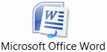
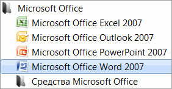
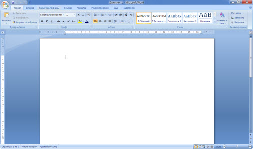
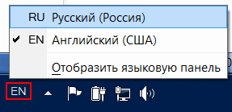

Печать текста на компьютере
В этом небольшом уроке я расскажу вам, как напечатать текст на компьютере. Где найти программу для печати и как в ней работать.
В этом небольшом уроке я расскажу вам, как напечатать текст на компьютере. Где найти программу для печати и как в ней работать.
Если же такой иконки нет, нажмите на кнопку «Пуск» в левом нижнем углу экрана.
Откроется список. Нажмите на пункт «Программы» (Все программы).
Появится новый список. Найдите пункт «Microsoft Office», нажмите на него и в появившемся небольшом списке нажмите на «Microsoft Word».
Если надписи «Microsoft Office» Вы не найдете, то, скорее всего, пакет офисных программ (в том числе программа Microsoft Word) не установлен на Вашем компьютере. В этом случае Вы можете воспользоваться стандартной программой WordPad (Пуск - Все программы - Стандартные). Или можно в качестве Ворда использовать Writer из пакета OpenOffice.
Откроется следующее окно. Это и есть программа для печати текста Microsoft Word.
Нас интересует центральная белая часть. Это лист формата А4. Вот здесь мы и будем печатать.
Обратите внимание: лист как будто обрезан. На самом деле, он просто не поместился – ведь размер экрана компьютера меньше, чем размер листа формата А4. Та часть, которая не поместилась, «прячется» внизу. Чтобы ее увидеть, нужно покрутить колесико на мышке или перетянуть вниз ползунок с правой стороны программы:
Но печатать текст мы будем с начала листа, поэтому, если Вы опустились в его конец (вниз), поднимитесь в начало (наверх).
Для того, чтобы начать печатать текст, нужно щелкнуть левой кнопкой мышки по листу. Лучше щелкните где-нибудь в центре.
В верхнем левом углу программы должна мигать черная палочка. Тем самым, программа Word «подсказывает», что уже можно печатать текст.
Кстати, он будет печататься там, где мигает палочка. Если хотите, чтобы он был в другом месте, нажмите по нужному месту два раза левой кнопкой мышки.
А теперь попробуйте напечатать что-нибудь, используя клавиатуру. Но для начала посмотрите, какой язык установлен. Внизу справа показан тот алфавит, который выбран на компьютере. Показан он двумя английскими буквами.
RU — это русский алфавит, EN — это английский алфавит.
Чтобы изменить язык ввода, нажмите на эти две буквы левой кнопкой мыши и из списка выберите нужный алфавит.
Попробуйте набрать небольшой текст. Если Вам сложно самостоятельно его придумать, откройте любую книгу и напечатайте небольшой кусок из неё.
Для перехода на другую строку (для набора текста ниже), нужно нажать кнопку Enter на клавиатуре. Мигающая палочка сместится на строчку вниз – там и будет печататься текст.
Также стоит обратить Ваше внимание на одну очень важную кнопку в программе Word. Эта кнопка называется «Отменить» и выглядит следующим образом:
Находится она в самом верху программы и позволяет отменить последнее, что Вы сделали в программе Word.
Например, Вы случайно удалили текст или как-то его испортили (сместили, закрасили и т.д.). Нажав на эту замечательную кнопку, программа Word вернет Ваш документ (текст) в то состояние, в котором он только что был. То есть эта кнопка возвращает на один шаг назад. Соответственно, если Вы нажмете на нее два раза, то вернетесь на два шага назад.